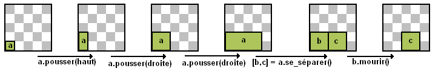
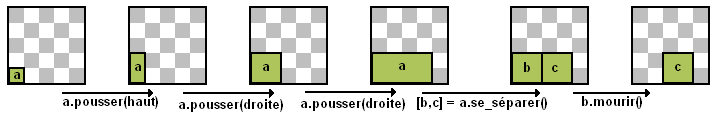

Une vie de plante
Castor adore les plantes. Il a inventé un langage de programmation permettant de simuler l'évolution d'une plante imaginaire.
Chaque image commence par une forme carrée, désignée par "a". Toute forme peut être transformée par trois opérations :
pousser : cette opération fait doubler la forme. On doit donner, entre parenthèses, la direction : droite, gauche, haut, ou bas, par exemple a.pousser(droite) fait doubler vers la droite la largeur de la forme a.
se_séparer : cette opération sépare la forme en deux formes identiques, en la coupant au milieu du côté le plus long. Une forme carrée ne peut pas être séparée en deux. On doit donner 2 lettres pour désigner ces nouvelles formes.
Par exemple [b,c] = a.se_séparer() coupe la forme a en deux formes b et c plus petites et identiques. La première lettre (ici, b) est la nouvele forme du bas ou à gauche, la deuxième lettre (ici, c) est l'autre.
mourir : cette opération détruit la forme, par exemple b.mourir() détruit la forme b.
Castor souhaite écrire un programme qui transforme l'image 1 ci-dessous jusqu'à obtenir l'image 2 ci-dessous. La lettre n'est pas précisée pour la forme de l'image 2, elle peut-être une lettre quelconque.
On vous propose ci-après 4 débuts de programmes. Trois d'entre eux ne conviennent pas car ils donnent des images qui ne pourront pas être transformées vers l'image souhaitée. Quel est celui qui peut être utilisé pour débuter le programme de Castor ?
La solution
Voici le résultat de l'exécution de chacune des propositions :
A B
C
D
B
C
D
L'exécution de la proposition C ne laisse plus aucune forme, donc on ne peut plus rien faire.
L'exécution des propositions B et D donne dans les deux cas une forme carrée de 2x2. On ne peut pas couper un carré en 2, et si on l'agrandit pour le redécouper ensuite, on ne pourra jamais obtenir une forme plus petite que ce carré. Ces deux propositions sont donc fausses.
La proposition A permet par contre d'atteindre l'objectif, en continuant par l'exécution des commandes suivantes :
C'est de l'informatique
Cet exercice introduit plusieurs notions de programmation :
- La notion de programme comme une suite d'instructions.
- Le principe de l'appel de fonction avec ou sans paramètre.
- La notion de variable, et la notion d'affectation.
- La notion de modèle objet, où la notation a.pousser(droite) permet d'exécuter une fonction sur l'objet a.
En plus de l'introduction de ces notions, il demande d'être capable de comprendre un programme existant. Enfin, et c'est sans doute le plus difficile, il demande de déterminer, à partir d'un ensemble de fonctions disponibles, ce qu'il est possible ou non en combinant un certain nombre de ces fonctions. Ces problématiques sont fréquemment rencontrées par un programmeur.